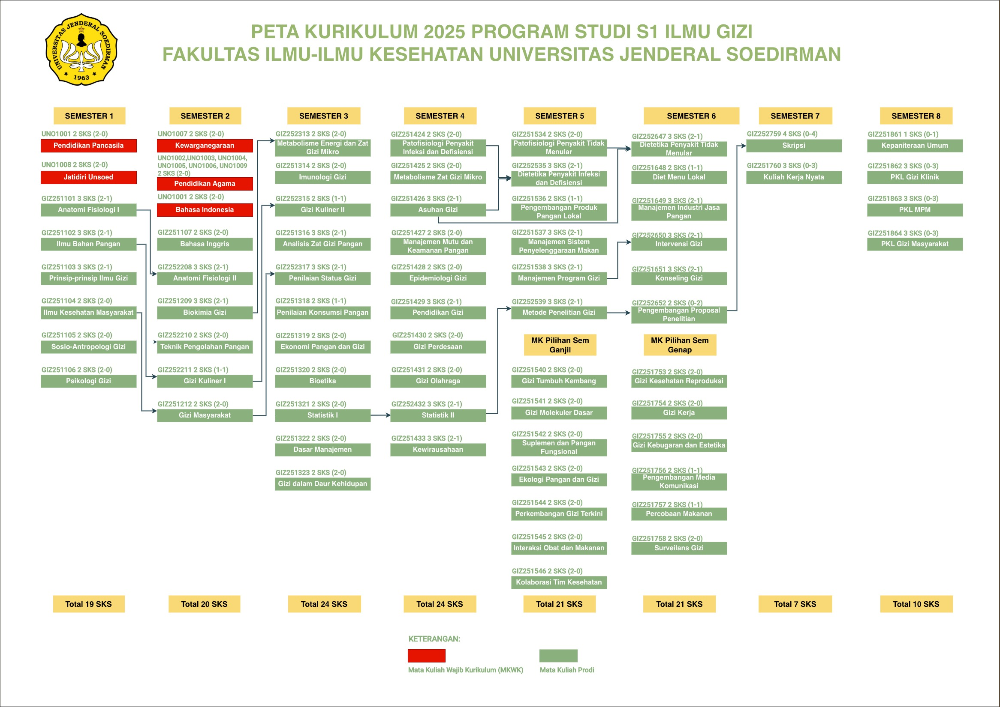

Gizi Klinik
Gizi Masyarakat
Manajemen Pangan
Riset
Pondasi / MKWK
Praktik / TA
💡 Klik mata kuliah untuk melihat detail CPL & link RPS. Prasyarat ditampilkan di bagian bawah kartu.
Peta Kurikulum & Kompetensi

Cara menampilkan file peta
Letakkan file-file ini di folder yang sama dengan HTML:
1
PETA_KURIKULUM_2025.jpg — gambar peta kurikulum2
PETA_KOMPETENSI_S1_ILMU_GIZI.pdf — dokumen peta kompetensi3
Buka file HTML di browser (Chrome/Firefox) — peta tampil otomatis4
Untuk RPS per MK: letakkan file bernama RPS_GIZ251101.pdf dst.